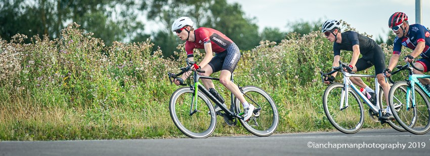
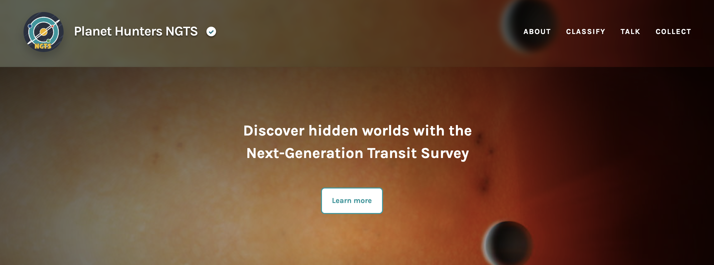
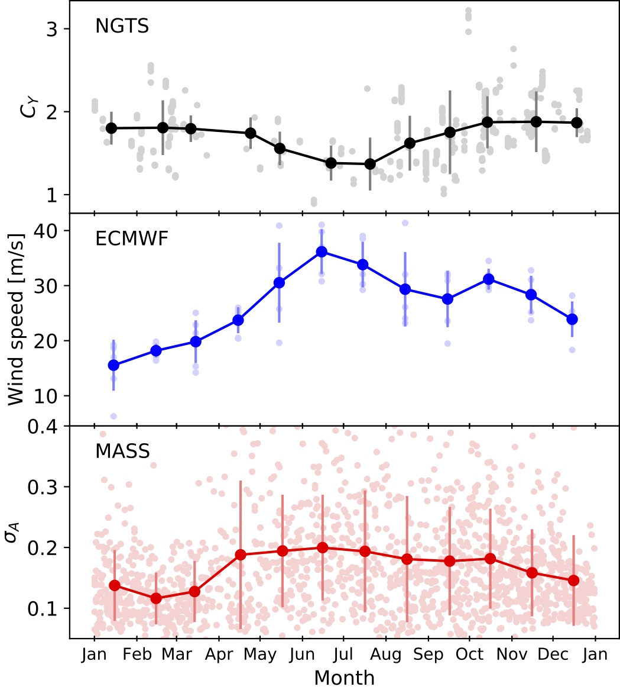

About Me
Hello! I'm Sean, an astrophysics PhD student at Queen's University Belfast. I lead the data analysis for the Planet Hunters NGTS citizen science project which you can read more about here.
Education:
BSc - Mathematics, University of Warwick, 2017-20
MSc by Research - Physics, University of Warwick, 2020-21. Supervisor: Dr Daniel Bayliss
PhD - Physics, Queen's University Belfast, 2021-present. Supervisor: Dr Megan Schwamb

Other interests: When I'm not doing science, I'll probably be found riding a bike or watching any sport I can find. I'm an avid
watcher of hockey, rugby and Formula 1. I'm also big fan of sitcoms (this website was created while re-watching Community for the
nth time).
Research

Planet Hunters NGTS
During my PhD, I am leading the data analysis of the Planet
Hunters NGTS citizen science project. Exoplanet detection using transit surveys relies on many hours of human vetting to search for
transit-like signals and filter out false positives. The power of citizen science has been proven by projects such as Galaxy Zoo,
Planet Hunters and Planet Hunters TESS. These platforms present images or light curves from telescopes and utilise classifications
from public volunteers to categorise astronomical phenomena, drastically increasing the speed at which researchers can discover
new objects such as transiting exoplanets. My research is focused on exoplanet detection and measuring the detection efficiencies
of citizen scientists using the ngts.planethunters.org Zooniverse project.
Planet Hunters NGTS is the next iteration of the Planet Hunters project, using data from the Next-Generation Transit Survey
to search for exoplanet candidates missed in the initial searches by the science team.
NGTS Scintillation Monitoring
For my MSc by Research, I investigated the noise properties of scintillation-dominated
light curves from the NGTS telescopes at the Paranal Observatory in Chile. Atmospheric
scintillation is caused by light passing through turbulent regions of the Earth's atmosphere, resulting in changes in intensity of
the light received by a telescope. This is more colloquially known as the "twinkling" we see when observing stars with the naked
eye. This is the dominant noise source when observing bright stars with small-aperture ground-based telescopes, such as at the
NGTS observatory. I compared the photometric noise of NGTS light curves with theoretical noise models, such as the modified Young's
equation, and measured the empirical scintillation coefficient CY. We found agreement between NGTS measurements of
CY and previous independent measurements of the scintillation. We also found correlations with monthly high-altitude
wind speeds: long-exposure scintillation decreased as these wind speeds increased. This is because the turbulence cells are averaged
out during the long-exposure time of the NGTS telescopes. A gif of the monthly changes in wind speed above South America can be
viewed here. This gif is linked in my MSc thesis.
Publications

ORCID
Scintillation-limited photometry with the 20-cm NGTS telescopes at Paranal Observatory
Sean M. O'Brien, Daniel Bayliss, James Osborn et al. 2021, MNRAS, Vol. 509, Issue 4, Pages 6111-6118, doi:10.1093/mnras/stab3399
Outreach
More about Planet Hunters NGTS
U- or V-shaped dip? How to spot the difference?
Planet Hunters NGTS: Metadata
Planet Hunters NGTS
Miscellaneous:
Scintillation paper Twitter thread
Contact
Email: sobrien27(at)qub.ac.uk
Queen's webpages: Departmental/PURE
Address: Astrophysics Research Centre, Queen's University Belfast, Belfast, BT7 1NN